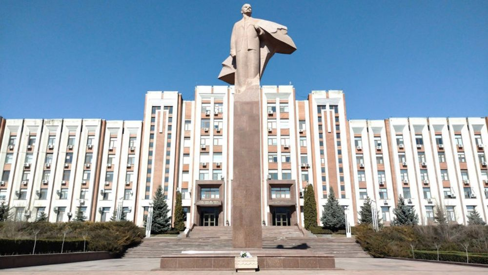

Descoperă Tiraspol - Capitala Transnistriei
Tiraspol este orașul principal al regiunii separatiste Transnistria, oferind o perspectivă unică asupra istoriei și culturii:
-

Statuia lui Lenin - Simbol istoric
O statuie iconică a liderului revoluției, care amintește de istoria comunistă a regiunii.
-

Arhitectura sovietică - O călătorie în timp
Clădiri și structuri care păstrează spiritul și designul epocii sovietice.
-

Muzeul Național - Patrimoniul cultural
Un muzeu care prezintă istoria și cultura regiunii, de la timpurile antice până în prezent.
-

Râul Nistru - Element natural
Localizat pe malurile râului Nistru, Tiraspol oferă peisaje pitorești și recreere liniștită.
-

Piețe tradiționale - Atmosferă autentică
Piețele locale oferă oportunitatea de a explora cultura și obiceiurile zilnice ale locuitorilor.
Concluzii
Tiraspol este un oraș care păstrează amintirea perioadei sovietice și oferă o privire într-o realitate politică și culturală complexă.